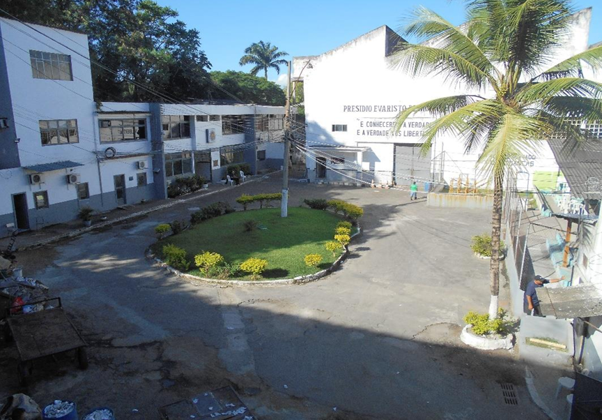

Decisões do SIDH
Penitenciária Evaristo de Moraes
Síntese pública das medidas provisórias determinadas pela Corte Interamericana de Direitos Humanos para a Penitenciária Evaristo de Moraes, no Estado do Rio de Janeiro.
Síntese do caso
As Medidas Provisórias determinadas pela Corte Interamericana de Direitos Humanos em 21 de março de 2023 referem-se à situação da Penitenciária Evaristo de Moraes, no Estado do Rio de Janeiro, diante de alegadas violações graves e persistentes aos direitos das pessoas privadas de liberdade. O caso passou a ser acompanhado pelo Sistema Interamericano após a Comissão Interamericana de Direitos Humanos conceder medidas cautelares, em agosto de 2019, em razão da superlotação estrutural, condições insalubres de detenção, dificuldades de acesso à água potável, alimentação inadequada e deficiência na assistência à saúde. Também foram registrados diversos óbitos sob custódia sem esclarecimento adequado das causas, além de denúncias relacionadas à precariedade das instalações e à ausência de assistência penitenciária suficiente.
Em dezembro de 2022, a CIDH concluiu que a situação havia se agravado, apontando risco iminente de dano irreparável aos direitos fundamentais dos internos. Foram relatados níveis de superlotação superiores a 190% da capacidade da unidade, infiltrações, colchões insuficientes, restrição de acesso ao sol, possível contaminação da água, falhas de higiene e alimentação de baixa qualidade, além da insuficiência estrutural dos serviços de saúde. Entre 2019 e 2022, registraram-se ao menos cinquenta mortes sem investigação adequada. Diante desse cenário, a Comissão submeteu o caso à Corte IDH, que reconheceu a persistência de condições de extrema gravidade e urgência, entendendo que as medidas adotadas pelo Estado brasileiro eram insuficientes para garantir a proteção da vida e da integridade das pessoas privadas de liberdade, razão pela qual determinou a adoção imediata de medidas provisórias específicas.
Mapa de Localização
